1. Purpose & Overview
The factory head unit on the 3rd Generation Toyota Prius (2010–2015) lacks contemporary digital standards such as Apple CarPlay, Android Auto, high-definition touch navigation, and crisp bluetooth streaming. The goal of this upgrade is to replace the aging factory radio with a high-definition Android-based Smart Infotainment System tailored to fit the Prius dashboard seamlessly while retaining factory features such as the original OEM backup camera and steering wheel controls.
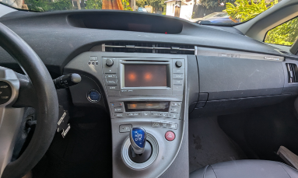
Original Car & Interior Setup
Toyota Prius Gen 3 original exterior and dashboard layout prior to starting disassembly.

Upgraded Android Auto Display
Final look with clean dash integration, real-time navigation, media streaming, and hands-free interface.
2. Parts & Tools Needed
Ensure you have all items and tools gathered prior to removing any dashboard trim elements.
Key Components & Head Unit
- Android Infotainment Head Unit: Prius Gen 3 specific trim-integrated touchscreen unit 9 inch (buy it from Amazon or Ebay).
- Plug-and-Play Wiring Harness: Prius OEM adapter harness with CANBUS decoder module.
- GPS & USB Adapters: External GPS antenna, dual USB extension cables, and radio antenna adapter.
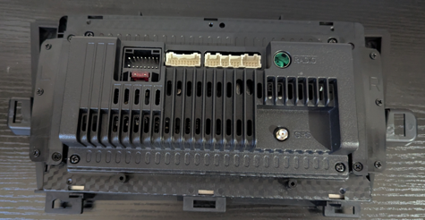
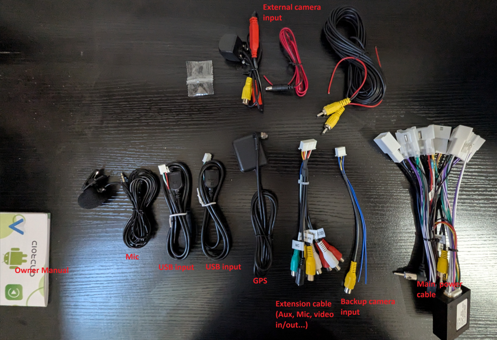
Recommended Tools
- Plastic Trim Pry Tools: Prevents scratching or denting soft dashboard plastics.
- 10mm Socket Wrench: Required for removing four main bolts securing original radio.
- Phillips Screwdriver: For securing brackets and frame panels.
- Zip Ties & Electrical Tape: For clean wire management behind the dashboard.
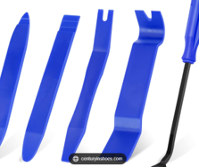
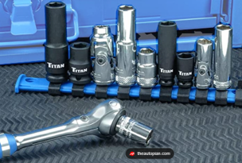
3. Step-by-Step Installation
Click checkboxes to track your installation progress
Turn off the ignition completely and set the park brake. For extra electrical safety, pop the rear trunk hatch, remove the battery cover on the right side, and disconnect the 12V negative battery terminal using a 10mm wrench.
Carefully pop off the Prius dashboard panels in order using plastic pry tools:
- Unclip the lower center console cup holder section.
- Gently pull away the power start button trim panel.
- Unclip the main upper air vent trim surrounding the factory radio display screen. Unplug the hazard switch connector.
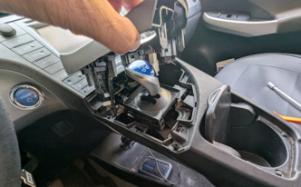
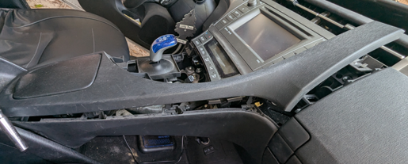
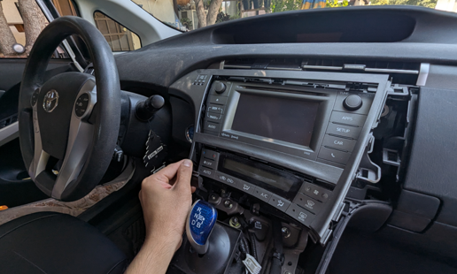
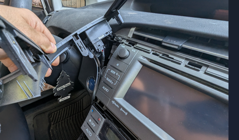
Diagram illustrating pry points along the center console, ignition button, and center air vents.
Locate the 4 primary 10mm bolts holding the original Toyota radio head unit in place. Unscrew them carefully using a 10mm socket wrench (taking care not to drop bolts inside the dash). Slide out the factory receiver and detach all factory wiring connectors from the rear.
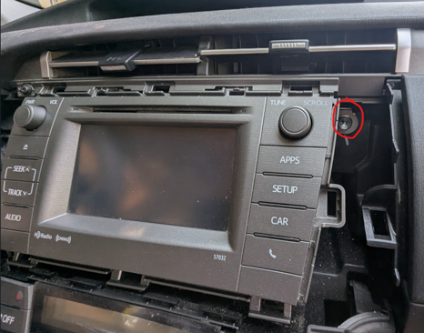
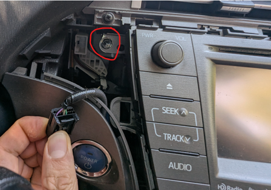
Highlighting the 4 bolt locations securing the radio chassis to the dash sub-frame.
Connect the provided main wiring harness adapter into the factory Prius vehicle connectors. Attach the CANBUS box module to the matching harness lead. Route the GPS antenna to the top of the dash/A-pillar, and run USB cables down into the glove compartment or lower tray.
To enable the OEM factory backup camera on the new screen, you MUST connect the yellow RCA plug labeled CAMERA IN / CAMIN from the main harness into the matching female RCA port on the back of the head unit harness. Ensure the trigger wire labeled BACK / REVERSE is firmly pinned into the main harness connector.
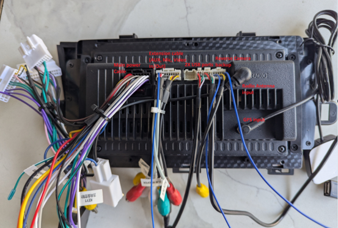
Wiring harness schematic & CANBUS port map.
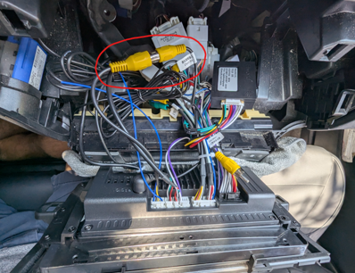
Physical view of custom harness attached to original plug.
Reconnect the 12V battery terminal. Turn the ignition to ACC or READY mode to test unit startup. Check audio output, touch response, hazard light connector functionality, steering wheel volume buttons, and FM reception before snapping dashboard trim panels back into position.
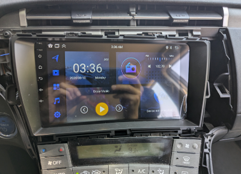
Android system logo loading screen on initial power-on test.
4. Camera Resolution Verification & Glitch Fix
Common Post-Install Issue
When shifting into Reverse (R) after installation, many Prius owners experience a black screen, static lines, "No Signal" warning, or distorted video feed. This occurs because modern Android head units default to high-definition (AHD 1080p / AHD 720p) resolution, whereas the factory Toyota Prius OEM camera outputs an analog NTSC standard CVBS signal.
Follow these step-by-step factory settings overrides to switch the system input format so it matches the factory backup camera output:
- 1 Open Settings on the Android screen and navigate to Factory Settings or Car Settings.
-
2
When prompted for a factory security code, enter common manufacturer codes such as
8888,123456, or000000. - 3 Locate Backcar Source, Reverse Camera Standard, or HD Reverse Camera Choice.
- 4 Change setting from AHD 25fps / 720P to CVBS NTSC or SD Normal.
- 5 Tap Save / Reboot. Upon rebooting, shift into Reverse to confirm clear video feed.
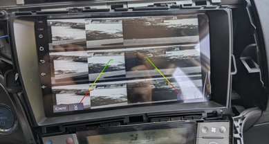
Black screen or distorted signal due to resolution mismatch.
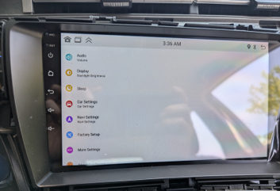
Accessing hidden Android system car settings.
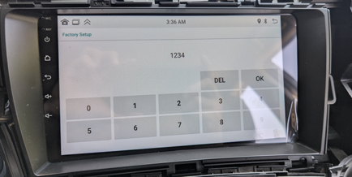
Security PIN entry dialog (e.g. 8888 or 123456).
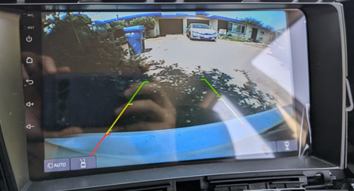
Clear video feed restored via CVBS NTSC selection.
5. Conclusion & Final Result
Upgrading the infotainment system in your 3rd Generation Toyota Prius effectively modernizes your vehicle's interior experience without needing expensive custom fabrication or permanent wiring alterations.
With modern Apple CarPlay and Android Auto integration, wireless Bluetooth streaming, responsive map navigation, and retained factory steering wheel and camera controls, your Prius is fully equipped with contemporary smart car conveniences.
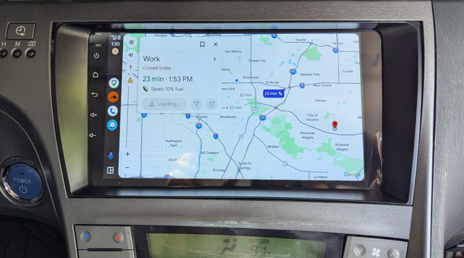
Full dashboard view with seamless trim integration and modern UI.